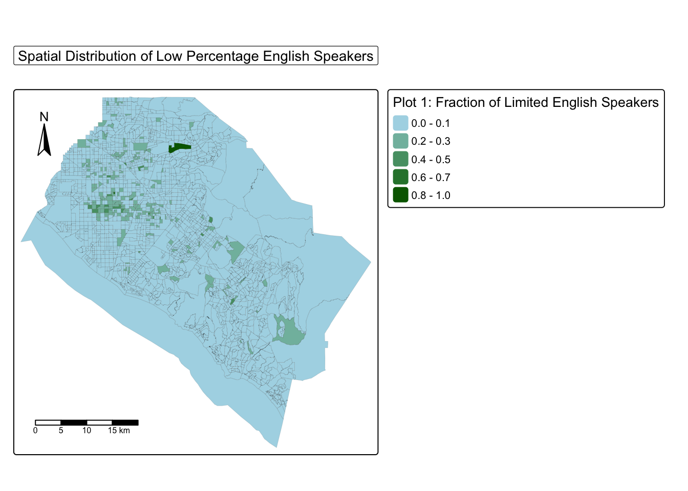
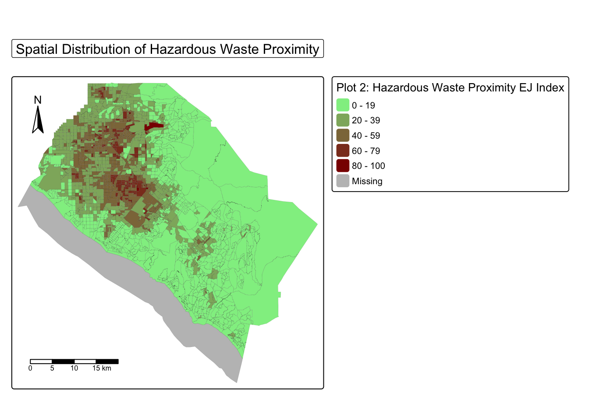

library(tidyverse)
library(sf)
library(here)
library(tmap)
library(stars)
library(viridisLite)
# read in geodatabase of EJScreen data at the Census Block Group level
ejscreen <- st_read(here(
"data",
"ejscreen",
"EJSCREEN_2023_BG_StatePct_with_AS_CNMI_GU_VI.gdb"
))Loading in Packages and Data
Region: Orange County, California
Community: Low % of Native English Speakers
EJ Issue: Hazardous Waste Proximity
Preliminary Data Loading
# filter database to just data in orange county
orange_county <- ejscreen |>
filter(CNTY_NAME == "Orange County") |>
filter(ST_ABBREV == "CA")Becuase we are looking at only orange county, we will need to filter the dataset to just entries in Orange County, California (this is where I am from). The two maps that will be displayed will show the distribution of Low % Native English Speakers, and the distribution of Hazardous waste proximity. By taking a close look at the distribution of these two, we will hopefully be able to eyeball a relationship.
In the dataset, the columns names are: - orange_county$LINGISOPCT to look at the percentage of limited Englisht-speaking households - orange_county$D2_PTSDF to look at the index that quanitfies the hazardous waste proximity of a community (Environmental Justice Index)
Map 1: Spatial Distribution of Low Percentage English Speakers
# Map the spatial distribution of low percentage english speakers
tm_shape(orange_county) +
tm_fill(
fill = 'LINGISOPCT',
fill.legend = tm_legend(
title = "Plot 1: Fraction of Limited English Speakers"
),
fill.scale = tm_scale(values = c('lightblue', 'darkgreen'))
) +
tm_borders(
col = 'black',
lwd = 0.05
) +
tm_scalebar(position = c("left", "bottom")) +
tm_compass(position = c("left", "top")) +
tm_title(
"Spatial Distribution of Low Percentage English Speakers",
bg = TRUE,
frame = TRUE,
frame.color = 'black',
size = 1.5
)[plot mode] fit legend/component: Some legend items or map compoments do not
fit well, and are therefore rescaled.
ℹ Set the tmap option `component.autoscale = FALSE` to disable rescaling.
Map 3: Spatial Distribution of Hazardous Waste Proximity
# Map the spatial distribution of low percentage english speakers
tm_shape(orange_county) +
tm_fill(
fill = 'D2_PTSDF',
fill.legend = tm_legend(
title = "Plot 2: Hazardous Waste Proximity EJ Index"
),
fill.scale = tm_scale(values = c('lightgreen', 'darkred'))
) +
tm_borders(
col = 'black',
lwd = 0.05
) +
tm_scalebar(position = c("left", "bottom")) +
tm_compass(position = c("left", "top")) +
tm_title(
"Spatial Distribution of Hazardous Waste Proximity",
bg = TRUE,
frame = TRUE,
frame.color = 'black',
size = 1.5
)[plot mode] fit legend/component: Some legend items or map compoments do not
fit well, and are therefore rescaled.
ℹ Set the tmap option `component.autoscale = FALSE` to disable rescaling.
What is going on in these maps?
Orange County, California, is home to some of the most beautiful beaches in the world. It also happens to be the place I call home– along with several diverse communitites. I grew up right next to several predominantly hispanic communities– more specifically a city called San Juan Capistrano. In plot 1, San Juan can be seen as the small green blotches in the southern region. In this city rests Doheny beach, a beautiful beach break that has a rivermouth feeding into it. More times than not, you can see thousands of different types of hazards dumped into this rivermouth. People seem to simply disrespect this minority community far too often. This brought me to the question:
Are spanish speaking communities more exposed to hazardous waste?
If we take a look at the map, we can clearly see a relationship between these two variables. In both plots, there are concentration of higher values in the Northwest region. More specifically, the block in Plot 1 with the highest fraction of non english speakers is also extremely high in the Hazardous Waste Proximity Environmental Justice Index. It is clear that there may be a spatial association between these two variables. However, to come to this conclusion further analysis needs to occurr such as a bivariate local Morans I test for spatial autocorrelation.